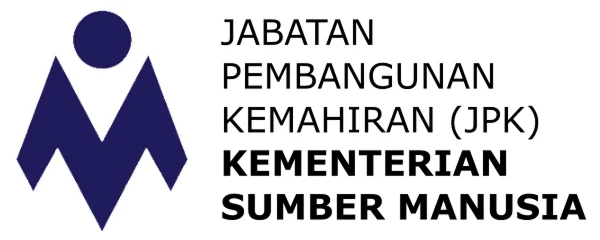
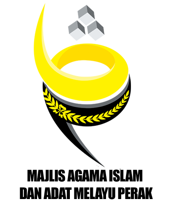
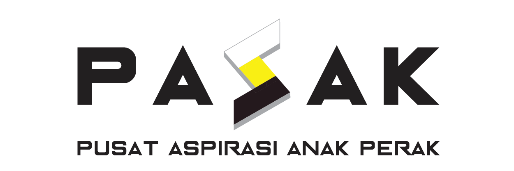
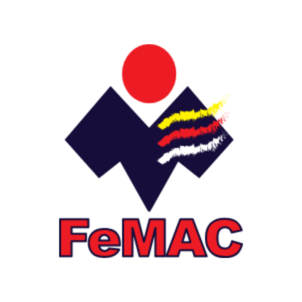
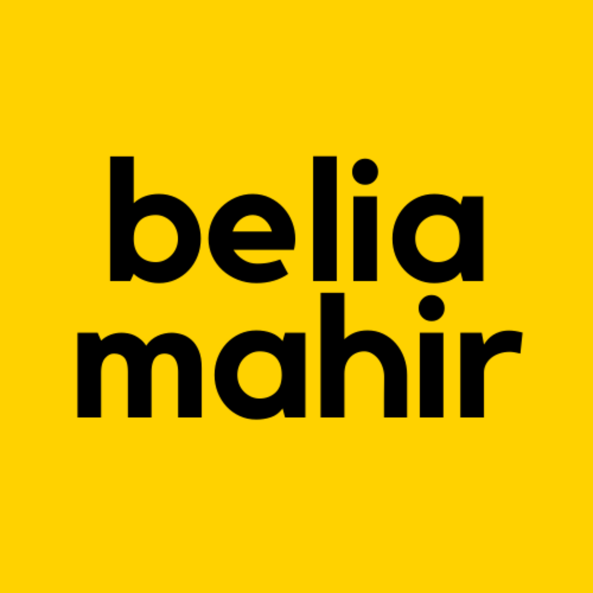
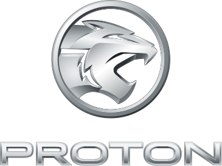
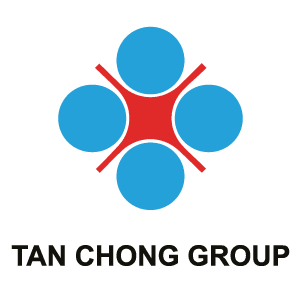
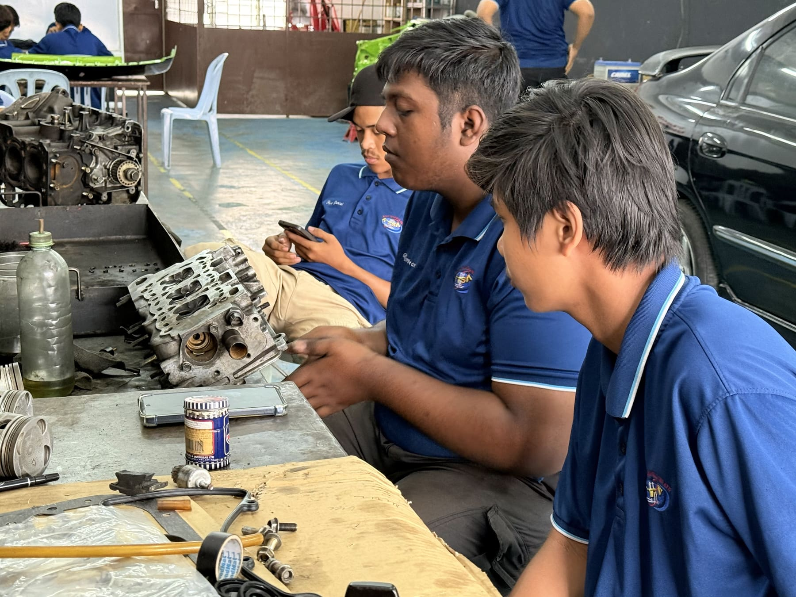
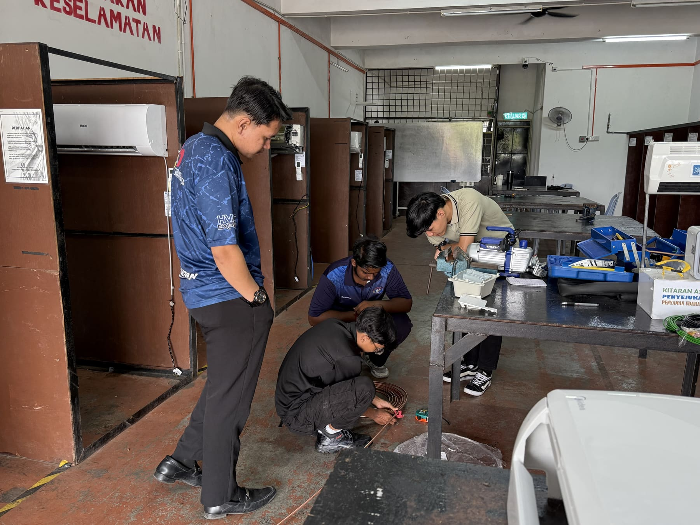
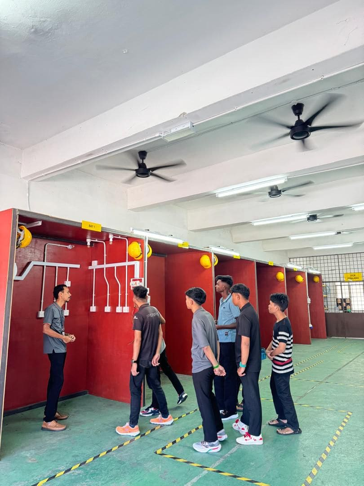

KTSA ialah Pusat Latihan Kemahiran Bertauliah yang berdaftar di bawah Jabatan Pembangunan Kemahiran (JPK), menawarkan latihan kemahiran teknikal bertauliah Sijil Kemahiran Malaysia (SKM) di Kampar, Perak. KTSA menjalankan tiga kursus TVET iaitu Automotif, Penyaman Udara dan Elektrik — dilengkapi bengkel praktikal dan tenaga pengajar bertauliah.







Kami memberi tumpuan penuh kepada latihan kemahiran vokasional yang praktikal, bertauliah dan relevan dengan keperluan industri semasa.
Semua program disusun mengikut standard Sijil Kemahiran Malaysia (SKM) Tahap 2 dan Tahap 3 yang diiktiraf industri.
Bengkel automotif, makmal penyaman udara dan makmal elektrik yang lengkap untuk latihan hands-on sepenuhnya.
Pelbagai pilihan bantuan kewangan dan pembiayaan yuran pengajian disediakan untuk memudahkan pelajar melanjutkan pengajian.
Dibimbing oleh jurulatih bertauliah yang berpengalaman dalam industri automotif, penyaman udara dan elektrik.
Lepasan kolej berpeluang bekerja dalam industri automotif, penyelenggaraan bangunan, dan pemasangan elektrik.
Terletak di Kampar, Perak — mudah diakses oleh pelajar dari Kampar, Ipoh dan kawasan sekitar.
Tiga bidang kemahiran teknikal utama yang direka untuk memenuhi permintaan industri semasa.

SKM Tahap 3Kemahiran diagnosis, penyelenggaraan dan pembaikan kenderaan bermotor dari asas hingga peringkat lanjutan, dilatih terus di bengkel sebenar.
Ketahui Lanjut
SKM Tahap 3Pemasangan, penyelenggaraan dan pembaikan sistem penyaman udara domestik dan komersial, termasuk pengendalian bahan penyejuk sistem penyaman udara yang selamat.
Ketahui Lanjut
SKM Tahap 2 & 3Pendawaian, pemasangan dan penyelenggaraan sistem elektrik bangunan mengikut piawaian keselamatan yang ditetapkan.
Ketahui LanjutSebahagian bahan promosi pengambilan pelajar yang pernah kami jalankan. Tarikh dan syarat pada bahan ini mungkin sudah tamat tempoh — hubungi kami untuk maklumat pengambilan semasa.
Kemahiran tangan hari ini adalah keyakinan kerjaya esok.Falsafah Latihan — Kolej Teknikal Sri Ayu
Pengambilan pelajar baharu sedang dibuka. Hubungi kami hari ini untuk maklumat lanjut mengenai permohonan dan bantuan kewangan.